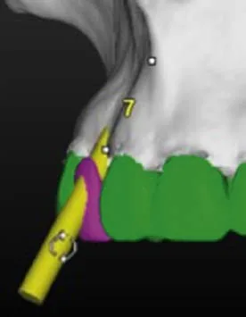
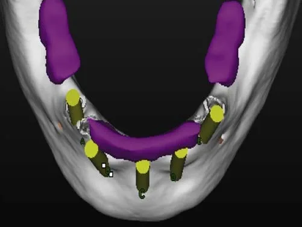

نسخه استخراجشده؛ ترجمه یا تأیید علمی انجام نشده است. وضعیت: captured
موقعیت فاسیوپالاتال (باکولینگوال) برای اثربخشی زیبایی و بیومکانیکی پروتز نهایی حیاتی است. یعنی این محور، هر دو حوزه را همزمان تحت تأثیر قرار میدهد.
مرجع موقعیتدهی: لبهی انسیزال تاج نهایی. در ماگزیلای قدامی، زاویهی ایدهآل خطی است از لبهی انسیزال تاج برنامهریزیشده تا وسط (یا کمی پالاتالِ) کرست. مرکز ایمپلنت زیر لبهی انسیزال یا کمی پالاتال آن مینشیند؛ اینطور اباتمنت صاف برای پروتز سمانی کافی است و دستکم ۲ میلیمتر استخوان در فاسیال میماند.
همراستا کردن بدنهی ایمپلنت با سطح فاسیال دندانهای مجاور وسوسهانگیز است، ولی ایمپلنت را بیش از حد فاسیال مینشاند. در شک، به سمت پالاتال خطا کن نه فاسیال: موقعیت کمی پالاتال را در تاج میتوان جبران کرد، ایمپلنت فاسیال را نه. آنچه باید شبیه دندانهای مجاور باشد، پروفایل خروج فاسیال تاج است، نه جهت بدنهی ایمپلنت.
خطای فاسیال — پرهزینهترین خطای این محور. پیامدهایش را بهترتیب شدت ببین:
خفیف: نیاز به اباتمنت زاویهدار یا سفارشی — راهحل هست ولی هزینه و پیچیدگی دارد، و اباتمنت زاویهدار با فاسیال حجیمترش خودش به کانتور اضافی و تحلیل لثه میانجامد.
متوسط: پریموکوزیت — التهاب بافت نرم اطراف، چون تیغهی استخوانی فاسیال روی ایمپلنت نازک است یا دهیسنس پیدا میکند و لثه عقب مینشیند؛ در بایوتایپ نازک این عارضه برجستهتر است.
شدید: ایمپلنت غیرقابل ترمیم میشود. یعنی جراحی موفق، ولی نتیجهی صفر.
و در سمت مقابل، موقعیت بیشازحد لینگوال هم بیهزینه نیست: تاج برای جبران، کانتور اضافی (ریجلپ) پیدا میکند، فضای زبان تنگ و گفتار مختل میشود؛ و در ناحیهی قدامی با دیپبایت و فضای بینفکی ناکافی، ایمپلنت لینگوال حتی ممکن است غیرقابل ترمیم شود.

ماگزیلای قدامی سختترین ناحیه برای موقعیتدهی است و دلیلش ترکیب دو مشکل است: مسائل ذاتی زاویه — یعنی تفاوت میان مسیر طبیعی دندانها و جهت استخوان موجود — و اینکه در ناحیهی زیبایی هستی. نتیجه: فضای بسیار کمی برای خطا.
و در استخوان تحلیلرفته وضعیت بدتر میشود: بهدلیل کمبود استخوان در عرض و ارتفاع بهعلاوهی مسائل زاویه، ایمپلنتها اغلب در موقعیت نامناسب قرار میگیرند.
یک زاویهی جایگزین: جهتگیری پالاتالتر، با خروج از زیر سینگولوم تاج. این موقعیت یا هدف است — وقتی تاج پیچی برنامهریزی شده و سوراخ پیچ باید در سینگولوم پنهان شود — یا نتیجهی کاشت در ریج باریکی (Division B) که از فاسیال تحلیل رفته است. بهایش را هم بدان: تاج برای شبیه شدن به دندانهای مجاور به ریجلپ فاسیال نیاز پیدا میکند و بهداشت سولکوس فاسیال مختل میشود؛ پس گزینهی نخست نیست.
مندیبل قدامی و هشدار لینگوال. باید زاویه و مسیر مندیبل قدامی با تصویربرداری سهبعدی ارزیابی شود تا احتمال پرفوراسیون کورتکس لینگوال به حداقل برسد. پشت کورتکس لینگوال، رگهای سابلینگوال و سابمنتالاند و پرفوراسیون میتواند خونریزی خطرناک کف دهان بسازد؛ پس این خطر آناتومیک حالا یک الزام موقعیتدهی است.
اصلاح زاویه حین جراحی: ابزار ایدئال اصلاح زاویه یا جابهجایی استئوتومی، متهی لیندمن است — متهای با برش جانبی که دیواره را برمیدارد و مسیر را جابهجا میکند؛ متههای معمول عمدتاً از نوک میبرند و به استئوتومی قبلی بازمیگردند. لیندمن حرارت و آسیب زیادی به استخوان میزند، پس با شستوشوی فراوان سالین کار کن و محل تازه را کمی عمیق کن تا متههای بعدی به مسیر قبلی نلغزند.

نوع سؤال: ساخت کلمه · 6 خانه
حروف منبع: د · ل · ی · ن · ن · م